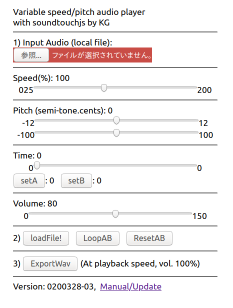

KG's variable pitch/speed player
Thanks to soundtouchjs module (https://github.com/cutterbl/SoundTouchJS).

Tested on (as of Mar.28, 2020)
- Linux(Ubuntu 18LTS) Firefox
- Windows 10(latest) Edge
- macOS(latest) Safari
- Android Phone (3 yo)
- iPhone 6 (latest iOS)
The program is written in JavaScript and computation is on your web browser.
It should work offline.
Brief How To
Prepare audio file (wav, mp3, and other formats depends on the device).
The folders, which iPhone mobile Safari can access, are quite limited.
iCloud Drive might be a good choice.
- 1) Load an audio file in the top input box.
- 2) "PlayFromA" to play once (A is default 0), "Pause" to pause
- "LoopAB" to play AB loop, "StopLoop" to stop loop
- Speed Control: move the slider (25% to 200%)
- Pitch Control: move the semi-tone slider and fine pitch adjust ment
by moving "cents" slider (100 cents = 1 semi-tone)
- Volume Control: move the volume slider
- 3) "ExportWav" to export wave file at the selected speed and pitch
- Notes on ExportWav
- ExportWav needs playback time with the current processing
(slow playback needs more time)
- Volume Control does not affect the volume of exported wav file.
- Do not move Speed and Pitch Sliders while exporting
- iPhone requires special operation to store the exported data.
Blob window pops up and it is possible to save the data in iCloud Drive.
However, the filename will not be set automatically. You might want to change the filename after.
I know it is stupid to wait for playback time for export.
I am trying to find a way to use soundtouchjs with OfflineAudioContext.
Source code (JavaScript and sound files)
https://github.com/goto920/nodejs/
Contact: goto at kmgoto.jp